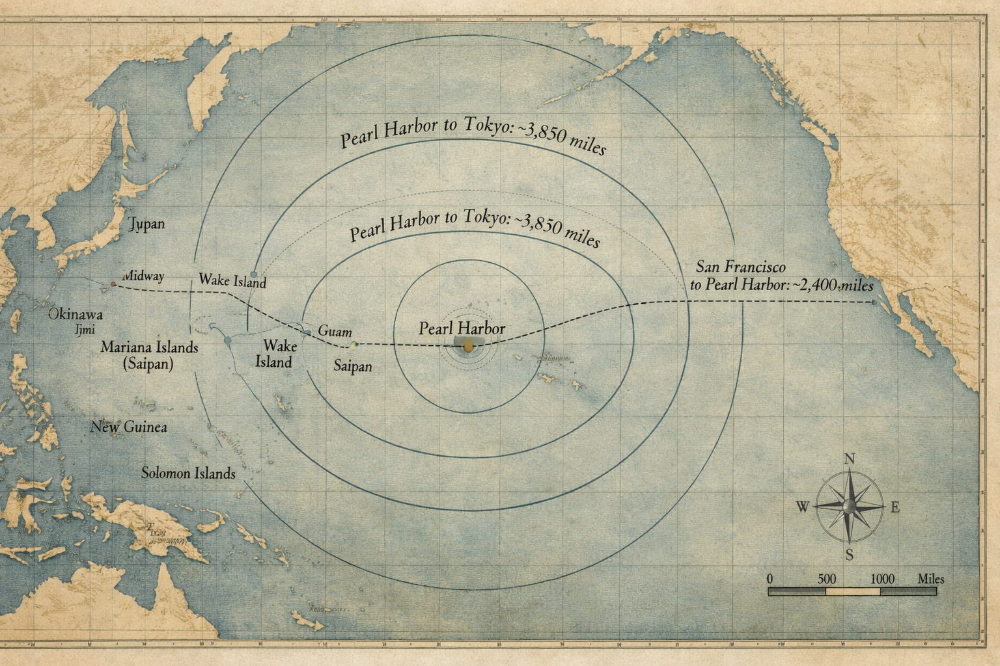
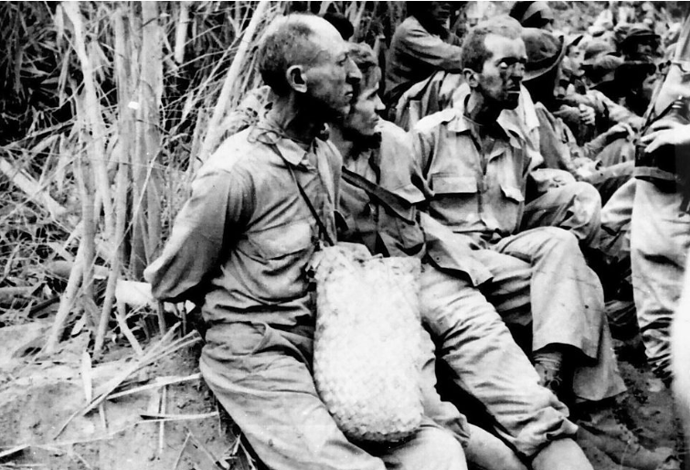
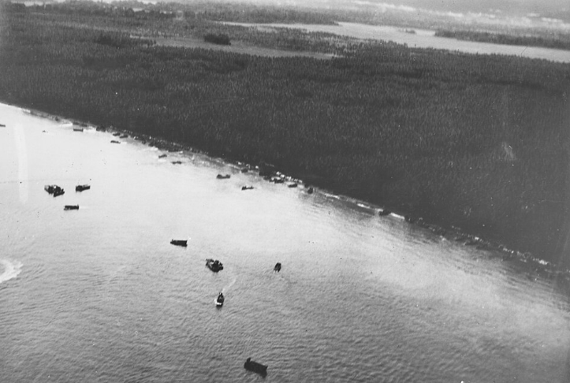
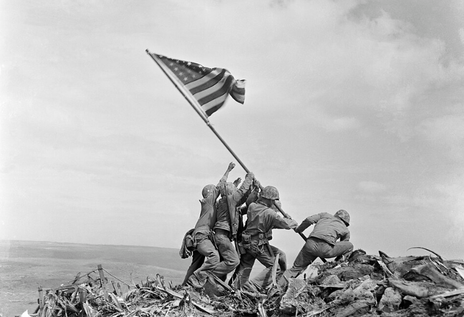
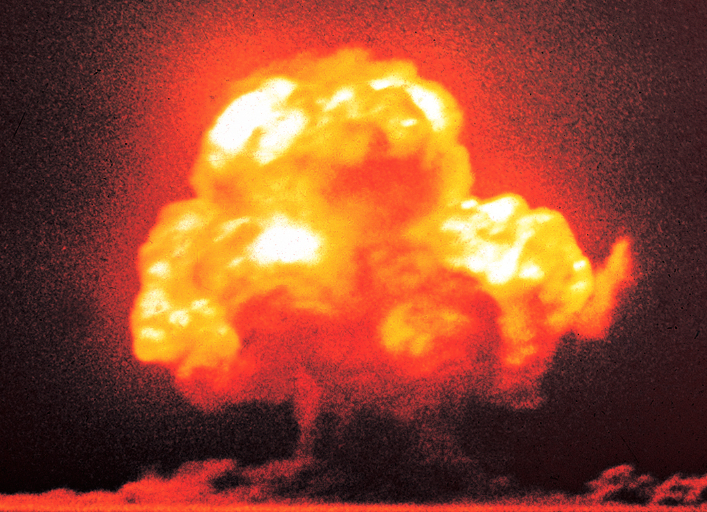
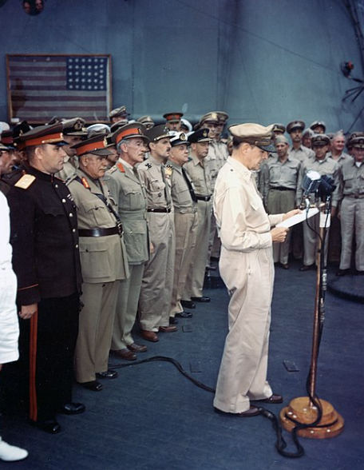
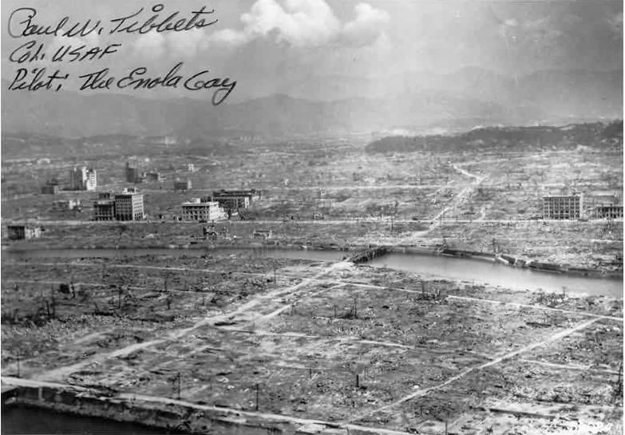
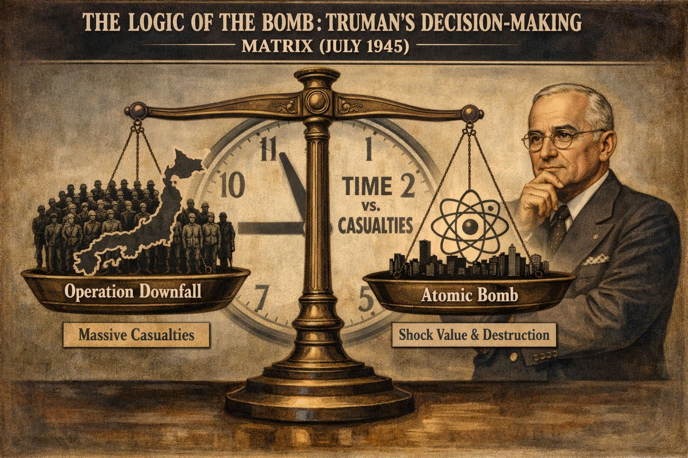

Core Objectives
- Trace the implementation of the "Island Hopping" strategy and its cost at key battles like Midway, Iwo Jima, and Okinawa.
- Analyze the influence of Japanese military culture (Bushido, Kamikaze) on the ferocity of combat and the treatment of POWs.
- Evaluate the political, military, and ethical factors involved in President Truman's decision to use atomic weapons on Hiroshima and Nagasaki.
Key Terms
Pacific Theater | Douglas MacArthur | Chester Nimitz | Island Hopping | Battle of Midway | Iwo Jima | Okinawa | Kamikaze | Manhattan Project | J. Robert Oppenheimer | Hiroshima and Nagasaki | Enola Gay | Potsdam Conference | Unconditional Surrender | Bataan Death March
Introduction | A War of Distances and Devastation
The Pacific Theater of World War II presented the United States with a conflict defined by staggering geographic distances and a profound clash of military cultures. From the initial defensive posture following the attack on Pearl Harbor to the eventual realization of American naval and aerial supremacy, the path to victory required unprecedented strategic innovation. As the Allies pushed closer to the Japanese home islands, the fighting intensified into a brutal struggle characterized by immense human sacrifice and extreme tactics. Ultimately, the culmination of this immense effort not only brought an end to a global conflict but also irrevocably altered the course of human history by ushering in the nuclear age.

The Pacific Theater required an unprecedented logistical effort, as military planners were forced to project power across thousands of miles of open ocean, transforming the conflict into a war defined as much by geography as by combat.
Early Struggles and Shifting Momentum
The opening phase of the war in the Pacific was marked by rapid Japanese expansion and devastating early setbacks for American and Allied forces, highlighting the vast logistical challenges of fighting across millions of square miles of ocean. As the United States reeled from early defeats and the horrific treatment of prisoners in the Philippines, military leaders urgently sought a way to halt the Japanese advance. The critical turning point arrived when American intelligence outmaneuvered the Japanese fleet, fundamentally shifting the balance of naval power and allowing the Allies to finally take the offensive.
The Vastness of the Pacific War
While the war in Europe was characterized by massive tank battles and the liberation of densely populated industrial cities, the Pacific Theater presented a fundamentally different challenge for the United States. This was a war of staggering, almost incomprehensible distances, fought across millions of square miles of open ocean and thousands of tiny, coral-fringed islands. The geography of the region dictated every strategic decision; victory would depend not on traditional land armies alone, but on naval supremacy and the ability to project air power from floating platforms. Following the devastating attack on Pearl Harbor, the American military was initially on the defensive, reeling from a series of rapid Japanese victories that seemed to signal the collapse of Western influence in Asia.
The Japanese military machine, having spent a decade preparing for this expansion, moved with incredible speed. Within months of Pearl Harbor, Japan had seized Guam, Wake Island, and Hong Kong, and was rapidly advancing through Southeast Asia toward Australia. The primary American concern was the defense of the Philippines, a key U.S. territory that sat directly in the path of the Japanese advance toward the resource-rich Dutch East Indies. In the Philippines, a combined force of American and Filipino soldiers under General Douglas MacArthur struggled to hold back a relentless Japanese onslaught. MacArthur’s forces were poorly equipped and lacked sufficient air support, as many American planes had been destroyed on the ground shortly after the Pearl Harbor attack.
Forced to retreat to the Bataan Peninsula and the island fortress of Corregidor, the defenders faced a desperate siege. They struggled with starvation, malaria, and a critical lack of ammunition as Japanese naval blockades cut off all hope of reinforcement or resupply from the United States. President Roosevelt, recognizing that the Philippines could not be held but wanting to preserve his most famous general, ordered MacArthur to escape to Australia to organize the Allied counter-offensive. Upon his arrival in Australia, MacArthur famously vowed to the world, "I shall return." Left behind were nearly 80,000 American and Filipino soldiers who were forced to surrender in April 1942, marking the largest surrender in American military history.

American and Filipino soldiers are marched by Japanese guards to prison camps following the surrender of the Bataan Peninsula in April 1942.
Why it Matters: The brutal treatment of prisoners of war during this forced sixty-mile trek revealed a profound clash of military cultures and a Japanese martial ethos that viewed surrender as the ultimate dishonor. News of these atrocities galvanized the American public and solidified the national resolve to achieve nothing less than the total defeat of the Japanese Empire.
The aftermath of this surrender revealed the brutal reality of the cultural divide between the two warring powers. The Japanese captors subjected the exhausted and malnourished prisoners to the Bataan Death March, a forced sixty-mile trek to a prison camp under the blazing tropical sun. During the march, thousands of weakened soldiers were beaten, bayoneted, or shot if they fell behind. Japanese guards frequently denied the prisoners water and food, viewing them with contempt because they had chosen surrender over death. This treatment was rooted in a Japanese military ethos that viewed surrender as the ultimate dishonor to one's family and Emperor. To the American public, news of the march served as a visceral reminder of the "ferocity of combat" that would define the Pacific war, cementing a national resolve to achieve nothing less than an Unconditional Surrender from the Japanese Empire.
Checkpoint
1. Why was the defense of the Philippines a primary strategic concern for the United States early in the war?
Turning the Tide: The Battle of Midway
By the spring of 1942, the Japanese Empire reached its maximum extent. To solidify their gains and force the United States into a negotiated peace, Admiral Isoroku Yamamoto, the brilliant architect of the Pearl Harbor attack, sought a "decisive battle" that would destroy the remaining American aircraft carriers. His target was Midway Island, a strategic outpost that served as the final line of defense for the Hawaiian Islands. Yamamoto believed that by threatening Midway, he could lure the American fleet into a massive trap and eliminate U.S. naval power in the Pacific once and for all.
However, the Japanese held a fatal and invisible disadvantage: American codebreakers, working in a secret basement in Hawaii known as "Station Hypo," had cracked the Japanese naval codes. Under the leadership of Admiral Chester Nimitz, the commander of the Pacific Fleet, the U.S. Navy was able to anticipate Yamamoto’s complex plan. Nimitz knew the exact location, strength, and timing of the Japanese approach. Rather than being surprised, the American carriers Enterprise, Hornet, and Yorktown moved into position to ambush the ambushers. When the Japanese fleet arrived at Midway in June 1942, they found the American carriers waiting just over the horizon.

American dive bombers attack the burning Japanese cruiser Mikuma during the decisive Battle of Midway in June 1942.
Why it Matters: The destruction of key Japanese naval vessels at Midway decisively shifted the balance of power in the Pacific by crippling Japan's offensive capabilities and halting its rapid expansion. This pivotal engagement proved that the aircraft carrier had permanently replaced the battleship as the supreme weapon of modern naval warfare.
The Battle of Midway was the undisputed turning point of the war in the Pacific. In a matter of minutes, American dive-bombers caught the Japanese carriers while their decks were crowded with fueled and armed planes. The U.S. sank four Japanese aircraft carriers—the Kaga, Akagi, Soryu, and Hiryu—which represented the heart of the imperial navy’s striking power. The loss of these ships, along with hundreds of highly trained pilots, was a blow from which Japan could never fully recover. Midway ended the era of Japanese expansion and shifted the strategic initiative to the United States. It proved that the aircraft carrier, not the battleship, was now the dominant weapon of modern naval warfare. With the Japanese naval air arm shattered, Admiral Nimitz and General MacArthur could begin the long, grueling process of reclaiming the Pacific one island at a time.
Checkpoint
1. What was the primary reason the United States was able to anticipate the Japanese attack at Midway?
The Brutal Path to Japan
With the naval advantage secured, the United States embarked on a grueling campaign to reclaim territory across the vast Pacific. By strategically bypassing heavily fortified strongholds to seize smaller islands for airbases, Allied forces systematically strangled Japanese supply lines and moved relentlessly closer to Japan itself. However, as the American military breached the inner defensive rings of the Japanese Empire, they encountered ferocious resistance, suicidal tactics, and unprecedented casualty rates that cast a dark shadow over the prospect of a final mainland invasion.
The Strategy of Island Hopping
The vastness of the Pacific and the sheer number of Japanese-held islands made it logistically impossible for the Allied forces to liberate every single occupied territory. To overcome this obstacle, the United States adopted a specialized strategy known as Island Hopping. Instead of attacking every heavily fortified position, the Allies would bypass, or "leapfrog," the strongest Japanese garrisons and instead seize smaller, less-defended islands that could be quickly converted into airbases. Once an airbase was established, American planes could use their range to bomb the bypassed islands, cutting off their supply lines and leaving the Japanese soldiers there to "wither on the vine" from starvation and disease.

United States Marines disembark from landing craft and wade through the surf during an amphibious assault at Guadalcanal in August 1942.
Why it Matters: Amphibious assaults were the necessary and highly dangerous mechanism for executing the strategy of bypassing fortified Japanese strongholds. Securing these remote, coral-fringed islands allowed the United States to establish forward airbases and steadily strangle Japanese supply lines across vast ocean distances.
This strategy allowed the Allies to move toward the Japanese home islands much more rapidly while minimizing American casualties. The execution of Island Hopping required an unprecedented level of coordination between the Navy, the Army, and the Marine Corps. Each "hop" involved a terrifying amphibious landing, where soldiers and Marines had to move from ships into landing craft and storm beaches against an enemy that was often deeply entrenched in coral caves and concrete bunkers. The first major test of this offensive was the Battle of Guadalcanal in late 1942, a six-month struggle in the Solomon Islands that introduced Americans to the horrors of jungle warfare, characterized by thick mud, tropical diseases, and nocturnal Japanese "Banzai" charges.
Throughout 1943 and 1944, the Allies implemented a dual-track offensive. Admiral Chester Nimitz led a naval thrust through the Central Pacific, capturing the Gilbert, Marshall, and Mariana Islands. The capture of Saipan and Tinian in the Marianas was a strategic milestone; it placed the Japanese home islands within the 1,500-mile range of the new B-29 Superfortress bombers. Meanwhile, General Douglas MacArthur advanced through the Southwest Pacific from Australia, moving through New Guinea and eventually fulfilling his promise to return to the Philippines. In October 1944, MacArthur’s forces landed at Leyte Gulf, supported by the largest naval battle in history. The U.S. victory at Leyte Gulf effectively destroyed the remaining Japanese fleet as a cohesive fighting force and began the long liberation of the Filipino people.
Checkpoint
1. How did the "Island Hopping" strategy allow the Allies to advance more quickly across the Pacific?
The Bloody Inner Ring: Iwo Jima and Okinawa
By early 1945, the Allied advance had reached the "inner ring" of Japanese defenses. Two islands in particular became synonymous with the horrific human cost of the Pacific war: Iwo Jima and Okinawa. Iwo Jima was a tiny, volcanic rock that provided a vital strategic advantage; it was needed as an emergency landing strip for B-29 bombers returning from raids on Tokyo. The Japanese defenders, led by General Tadamichi Kuribayashi, had spent months transforming the island into a subterranean fortress of interconnected tunnels, pillboxes, and caves. They were ordered to fight to the last man and were forbidden from launching suicidal charges, instead being told to kill as many Americans as possible from their hidden positions.

United States Marines raise the American flag over Mount Suribachi during the intense fighting for the island of Iwo Jima.
Why it Matters: The staggering casualty rates suffered while securing this tiny volcanic island highlighted the ferocious, deeply entrenched resistance of the Japanese military. The extreme human cost of breaching the inner defensive ring heavily influenced subsequent American military planning regarding a potential mainland invasion.
The Battle of Iwo Jima lasted five weeks and resulted in some of the highest casualty rates in the history of the U.S. Marine Corps. Of the 21,000 Japanese soldiers on the island, only about 200 were taken prisoner; the rest were killed in the fighting or committed suicide rather than face the shame of capture. The iconic image of the flag-raising atop Mount Suribachi became a symbol of American sacrifice and determination, but it also signaled the terrifying reality of what a direct invasion of the Japanese home islands would look like. This was followed by the invasion of Okinawa in April 1945, the largest amphibious assault of the Pacific war and a "dress rehearsal" for the final invasion of Japan.
At Okinawa, the Allies encountered the full fury of a desperate empire. The Japanese introduced a new and terrifying tactic: the Kamikaze, or "divine wind." These were suicide pilots who intentionally crashed their explosives-laden aircraft into Allied ships. The Kamikaze was more than just a military tactic; it was a manifestation of the Japanese military's "Bushido" code, which emphasized total self-sacrifice for the Emperor. On the ground, the fighting was even more desperate, as thousands of Japanese civilians were caught in the crossfire or forced into mass suicides by Japanese soldiers. The loss of over 12,000 American lives and over 100,000 Japanese lives at Okinawa weighed heavily on the minds of American military planners as they prepared for "Operation Downfall," the planned invasion of the Japanese heartland scheduled for late 1945. Projections suggested that an invasion of the home islands could result in over a million American casualties.
Checkpoint
1. How did Japanese defensive tactics at Iwo Jima differ from earlier "Banzai" charges?
A Devastating Conclusion
As military planners braced for a horrific mainland invasion, a top-secret scientific endeavor in the United States successfully developed a weapon of unimaginable destructive power. Faced with the prospect of millions of casualties, a new American president made the momentous decision to deploy this terrifying new technology to force an immediate end to the conflict. The resulting devastation brought about the surrender of Japan and radically transformed the geopolitical landscape, leaving behind a complex legacy of peace, reconstruction, and the looming threat of nuclear annihilation.
The Manhattan Project and the Nuclear Choice
While the soldiers were engaged in the "island-hopping" campaigns, a secret group of the world's most brilliant scientists was working in the United States on a project that would change the course of human history. The Manhattan Project was a massive, multi-billion dollar research and development program aimed at creating the first atomic bomb. Driven by the terrifying fear that Nazi Germany was developing its own nuclear weapon, the project brought together a diverse group of scientists, many of whom were refugees from fascist Europe. The project was directed by the theoretical physicist J. Robert Oppenheimer, who oversaw the primary laboratory at Los Alamos, New Mexico.

The first successful detonation of an atomic weapon occurs during the Trinity test in the New Mexico desert in July 1945.
Why it Matters: The successful detonation of an atomic device marked the culmination of a massive, unprecedented mobilization of American scientific and industrial resources. This technological breakthrough presented military leaders with a weapon of unimaginable destructive power, fundamentally altering the strategic options available to end the global conflict.
The project was a monument to American industrial and scientific mobilization. It required the construction of secret, entire cities in Tennessee and Washington to refine the rare isotopes of uranium and plutonium needed for a nuclear chain reaction. In July 1945, the first successful test of an atomic device, known as the "Trinity" test, took place in the New Mexico desert. The resulting explosion was unlike anything ever seen by man, a blinding flash followed by a massive mushroom cloud that vaporized the desert sand into glass. Upon witnessing the power of the weapon he helped create, Oppenheimer famously recalled a line from the Hindu scripture, the Bhagavad Gita: "Now I am become Death, the destroyer of worlds."
The existence of the bomb was a secret even from the Vice President until Franklin Roosevelt died in April 1945. The decision to use this weapon rested solely on the shoulders of the new president, Harry S. Truman. Truman was a plain-spoken man from Missouri who had been in office only a few months and was weary of the mounting death toll in the Pacific. At the Potsdam Conference in July 1945, Truman joined with other Allied leaders to issue a final warning to Japan: surrender immediately or face "prompt and utter destruction." When the Japanese government, controlled by hardline military ministers, ignored the ultimatum, Truman authorized the use of the bomb. From Truman’s perspective, the atomic bomb was not a moral dilemma but a military necessity—a way to end the war quickly and save the lives of hundreds of thousands of American soldiers who would otherwise die in an invasion of Japan.
Checkpoint
1. What was the original motivation for the creation of the Manhattan Project?
Hiroshima, Nagasaki, and the Nuclear Age
On the morning of August 6, 1945, a B-29 bomber named the Enola Gay released a single atomic bomb, codenamed "Little Boy," over the city of Hiroshima, a major military and industrial center. The resulting blast was equivalent to 15,000 tons of TNT, instantly vaporizing thousands of people and leveling several square miles of the city. Within minutes, a massive firestorm consumed what remained of the wooden buildings. Tens of thousands died instantly, and many more would succumb in the following weeks and months to the mysterious and horrific effects of radiation sickness. Despite this unprecedented level of destruction, the Japanese military high command refused to surrender, hoping that the United States possessed only one such weapon.

General Douglas MacArthur presides over the signing of the formal Japanese surrender documents aboard the USS Missouri in Tokyo Bay on September 2, 1945.
Why it Matters: The formal capitulation of the Japanese Empire brought a definitive close to years of devastating global warfare and marked the end of Japanese imperial expansion in Asia. The surrender ceremony simultaneously ushered in a precarious new era dominated by the looming threat of nuclear technology.
Three days later, on August 9, the United States dropped a second atomic bomb, "Fat Man," on the industrial city of Nagasaki. On the same day, the Soviet Union—honoring a secret promise made by Stalin at the Yalta Conference—formally declared war on Japan and launched a massive invasion of Japanese-occupied Manchuria. The combination of the atomic strikes and the entry of the Soviet Union finally broke the political deadlock in Tokyo. Emperor Hirohito, recognizing that his nation faced total annihilation, took the unprecedented step of intervening in the government. He ordered his ministers to accept the Allied terms of Unconditional Surrender. On August 15, 1945, the Emperor addressed the Japanese people by radio for the first time in history, announcing that Japan would "bear the unbearable" and surrender.
The formal surrender ceremony took place on September 2, 1945, aboard the battleship USS Missouri anchored in Tokyo Bay. General Douglas MacArthur presided over the signing, declaring that "a new era is upon us" and that the world had a "last chance" to achieve peace before nuclear technology destroyed civilization. The war in the Pacific was finally over, but its ending raised profound ethical and political questions that continue to be debated by historians today. Was the use of the bomb truly necessary to end the war, or was it a demonstration of power intended to intimidate the Soviet Union at the dawn of the Cold War? Regardless of the interpretation, the world had entered the nuclear age, and the nature of global conflict had been permanently and terrifyingly transformed.
Checkpoint
1. Why did the Japanese military high command initially refuse to surrender after the bombing of Hiroshima?
The Legacy of the Pacific War
The end of the war in the Pacific signaled the final collapse of the old European colonial order in Asia and the rise of the United States as the undisputed dominant power in the Pacific Rim. Under the leadership of General MacArthur, the United States oversaw the military occupation and democratic reconstruction of Japan. This occupation was unique in history; instead of seeking revenge, the U.S. focused on dismantling Japanese militarism, implementing land reform to help peasants, and establishing a new "Peace Constitution" that guaranteed basic human rights and permanently renounced war as a tool of national policy. This radical transformation eventually turned a former bitter enemy into one of America’s most vital and stable global allies.

A view of the structural devastation and rubble left in the immediate aftermath of the atomic bombing of Hiroshima.
Why it Matters: The comprehensive physical and societal destruction of the war necessitated a radical, U.S.-led reconstruction effort that dismantled Japanese militarism and implemented a new democratic constitution. This unique post-war occupation successfully transformed a bitter military adversary into a vital and stable democratic ally in the Pacific Rim.
However, the cost of the victory was immeasurable and the scars remained deep. The Pacific war had been a conflict of unprecedented brutality, characterized by a racialized hatred on both sides and a disregard for civilian life that culminated in the nuclear firestorms of 1945. The "Arsenal of Democracy" had triumphed, but it had done so by unleashing a force that could potentially end human civilization. As the G.I.s returned home to a nation transformed by prosperity, the lessons of the Pacific—the dangers of military extremism, the necessity of international cooperation, and the terrifying power of industrial technology—remained at the center of the American consciousness, defining the nation's role in the century to come.
Checkpoint
1. What was a primary focus of the U.S. occupation of Japan under General MacArthur?
Individuals & Leadership: Decision Makers
The Logic of the Bomb: Truman’s Decision
The Situation
In July 1945, President Harry S. Truman found himself in an extraordinary and solitary position. He was the leader of a nation that had been at war for nearly four years and was weary of the mounting death toll. The recent battles at Iwo Jima and Okinawa had demonstrated that the Japanese military was prepared to fight to the very last man, woman, and child in defense of their home islands. Truman was presented with a military plan for "Operation Downfall," a massive amphibious invasion of Japan. The projections were grim: military planners estimated that the invasion would result in hundreds of thousands of American casualties and millions of Japanese deaths. At the same time, the Manhattan Project had successfully produced a weapon of such power that a single bomb could destroy an entire city.
The Decision
Truman’s decision-making process was governed by the logic of "total war." He viewed the atomic bomb not primarily as a moral problem, but as a military tool that had been developed at great expense to win the war and bring the troops home. He weighed several alternatives: a continued naval blockade to starve Japan into submission, a demonstration of the bomb on an uninhabited island, or a continued conventional firebombing campaign. However, each alternative carried significant risks. A blockade could take months or years of continued fighting; a demonstration might "fizzle" or fail to impress the Japanese military hardliners; and conventional firebombing was already killing hundreds of thousands without forcing a surrender. Truman eventually concluded that only the overwhelming shock of the atomic bomb would force the Japanese government to accept Unconditional Surrender immediately.

Executive decision-making during total war often involves weighing catastrophic alternatives, where the anticipated loss of life in a prolonged conventional invasion is measured against the unprecedented deployment of mass-destruction weaponry.
The Impact
The use of the bombs on Hiroshima and Nagasaki achieved its immediate goal: Japan surrendered within days of the second strike, and the planned invasion was canceled. Thousands of American lives were undoubtedly saved. However, the decision also had long-term consequences that Truman could not have fully predicted. It launched the nuclear arms race with the Soviet Union and established a terrifying precedent for the use of weapons of mass destruction. While Truman remained publicly confident in his decision for the rest of his life, stating he "never lost a night's sleep over it," the ethical debate over the "Logic of the Bomb" remains a central theme in the study of American history and the responsibilities of leadership in the modern age.
Perspective Questions
Analyze the Imagery: Why did Truman and his advisors believe that the "shock value" of the atomic bomb was more important than a technical demonstration of the weapon on an empty island? How did this reflect their understanding of the Japanese military's psychology at the time?
Compare Viewpoints: Contrast the "military logic" used by Truman (saving American lives) with the "ethical concerns" later raised by some of the scientists who worked on the Manhattan Project. How do these differing perspectives illustrate the tension between scientific achievement and moral responsibility?
Evaluate Strategy: How did the entry of the Soviet Union into the war against Japan on August 9, 1945, influence the historical interpretation of Truman's decision? Consider whether the bomb was used primarily to end the war or to prevent Soviet influence in post-war Asia.
Vocabulary Activity
Read the narrative summary of the chapter below and fill in the blanks using the terms provided in the Word Bank. Each term should be used exactly once to complete the historical narrative.
Following this turning point, the Allies employed a specialized strategy of 6. , bypassing heavily defended outposts to seize smaller islands for airbases. This grueling campaign led to some of the war's bloodiest conflicts. At 7. , Marines fought fiercely for five weeks over a tiny volcanic rock needed as an emergency landing strip for bombers. The subsequent invasion of 8. introduced the terrifying new tactic of the 9. , or suicide pilots, showcasing the desperate and ferocious resolve of the Japanese military culture.
Meanwhile, back in the United States, a massive secret research program known as the 10. was rapidly advancing, directed by theoretical physicist 11. . After issuing a final warning to Japan at the 12. , President Truman authorized the military use of this new weapon to avoid a costly mainland invasion. On August 6, 1945, a B-29 bomber named the 13. dropped the first atomic bomb. The devastating attacks on the cities of 14. , combined with a Soviet declaration of war, finally forced the Japanese Emperor to intervene. Japan accepted the Allied demand for an 15. , bringing World War II to a close and officially launching the world into the nuclear age.